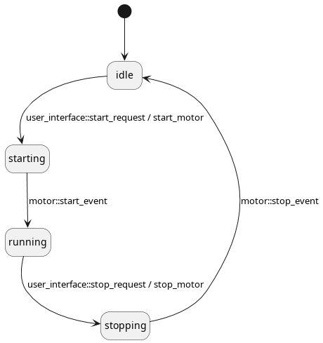

Definition
TODO
When to use an event
TODO
How to use events within AweSM
Within AweSM, an event can be an object of any type. It can carry data that your state machine (more precisely your actions and guards, which we'll see later in this manual) will be able to read.
AweSM only requires your events to be copyable (unless you disable run-to-completion, but we'll see that later as well).
Very often, you will define event types in modules that don't even depend on AweSM whatsoever.
Example
Let's see how an AweSM-based program typically handles events.
We have a device that is made of:
- a motor that takes a little time to start and stop;
- a user interface with two buttons to require the motor to start or stop.
We then implement a monitor for these buttons (the user_interface class) as well as a driver for the motor (the motor class). Both these classes send several types of events (asynchronously). To keep our code terse, we wrap these events into std::variants.
Here is user_interface.hpp:
#ifndef USER_INTERFACE_HPP
#define USER_INTERFACE_HPP
#include <variant>
#include <functional>
class user_interface
{
public:
struct start_request{};
struct stop_request{};
using event_type = std::variant<start_request, stop_request>;
using event_callback_type = std::function<void(const event_type&)>;
user_interface(const event_callback_type& cb):
cb_(cb)
{
}
private:
event_callback_type cb_;
};
#endif
Here is motor.hpp:
#ifndef MOTOR_HPP
#define MOTOR_HPP
#include <variant>
#include <functional>
class motor
{
public:
struct start_event{};
struct stop_event{};
using event_type = std::variant<start_event, stop_event>;
using event_callback_type = std::function<void(const event_type&)>;
motor(const event_callback_type& cb):
cb_(cb)
{
}
void async_start()
{
}
void async_stop()
{
}
private:
event_callback_type cb_;
};
#endif
We need a state machine to make sure:
- we don't forward multiple start requests while the motor is starting;
- we don't forward multiple stop requests while the motor is stopping.
Here is the state diagram:

The state machine of a motor
And here is main.cpp, which implements the state machine:
#include "user_interface.hpp"
#include "motor.hpp"
#include <awesm.hpp>
struct context
{
template<class Sm>
context(Sm& machine):
user_itf(make_event_callback(machine)),
mtr(make_event_callback(machine))
{
}
template<class Sm>
static auto make_event_callback(Sm& machine)
{
return [&machine](const auto& event_variant)
{
std::visit
(
[&machine](const auto& event)
{
machine.process_event(event);
},
event_variant
);
};
}
user_interface user_itf;
motor mtr;
};
void start_motor(context& ctx)
{
ctx.mtr.async_start();
}
void stop_motor(context& ctx)
{
ctx.mtr.async_stop();
}
::add<idle, user_interface::start_request, starting, start_motor>
::add<starting, motor::start_event, running>
::add<running, user_interface::stop_request, stopping, stop_motor>
::add<stopping, motor::stop_event, idle>
;
struct machine_def
{
using conf = awesm::machine_conf
::transition_tables<transition_table_t>
::context<context>
;
};
int main()
{
auto machine = machine_t{};
return 0;
}
The state machine implementation template.
Definition: machine.hpp:51
Definition: state_conf.hpp:21
Represents a transition table.
Definition: transition_table.hpp:105
Don't worry too much about the details for now. Just notice that:
- all the event types are defined into
user_interface and motor, which don't depend on AweSM;
- all the events sent by
user_interface and motor are forwarded to our machine_t instance through a call to machine_t::process_event().
 1.9.6
1.9.6